Cloud Pipeline v.0.17 - Release notes
- Billing reports enhancements
- System dictionaries
- Cloud Data application
- Sending of email notifications enhancements
- Allowed price types for a cluster master node
- "Max" data series in the resources Monitoring
- User management enhancements
- "All pipelines" and "All storages" repositories
- Sensitive storages
- Versioned storages
- Updates of "Limit mounts" for object storages
- Hot node pools
- FS quotas
- Export cluster utilization in Excel format
- Export cluster utilization via
pipe - Pause/resume runs via
pipe - Home storage for each user
- SSH tunnel to the running compute instance
- Updates of Metadata object
- Custom node images
- Launch a tool with "hosted" applications
- Advanced global search with faceted filters
- Explicitly "immutable" pipeline parameters
- Disable Hyper-Threading
- Saving of interim data for jobs stopped by a timeout
- Resolve variables for a rerun
- NAT gateway
- Custom Run capabilities
- Storage lifecycle management
- Image history
- Environments synchronization via
pipectl - Data access audit
- System Jobs
- Cluster run usage
- Cluster run estimation price
- Terminal view
- AWS: seamless authentication
- AWS: transfer objects between AWS regions
- AWS: switching of regions for launched jobs in case of insufficient capacity
- Notable Bug fixes
- Unable to view pipeline sources for previous draft versions
pipe storage lsworks incorrectly with the option--page- AWS deployment: unable to list more than 1000 files in the S3 bucket
- Size of tool version created from original tool without any changes is a lot larger than original one
pipe storage cpfails in Windows for the GCS- Shared endpoint for
anonymoususers is being opened from the second time - Attempt to view permissions on a pipeline via the
pipe view-pipesthrows an error - Scale down "cold" SGE autoscaling cluster
- "Launch Command" functionality issues
- Inner data storages navigation bar fails to navigate
- Region is being set incorrectly when trying to rerun pipeline
PAUSEandCOMMIToperations fail for the jobs with an autoscaled disk
Billing reports enhancements
In the previous version, the Billing reports functionality was introduced (see details here).
In v0.17, several useful features for the Billing reports were implemented.
Access to Billing reports for non-admin users
Previously, only admins had access to the Billing reports Dashboard and can view Platform's spendings data.
In some cases, it is convenient that non-admin users also have the access to specific cost reports info.
In the current version, such ability was implemented - in two ways:
- a new role was added into the predefined roles list -
ROLE_BILLING_MANAGER. If that role is assigned to the user - for him/her the Billing reports Dashboard becomes available. And all possible filters, charts and their types, discounts configuration, export feature and etc. become available too. So, users who are granted this role are able to view the whole Billing reports info of the platform (as if they were admins).- Note: this behavior is enabled by the new system preference
billing.reports.enabled.admins. It allows to configure Billing reports visibility for admins and billing managers. Default value is true.
- Note: this behavior is enabled by the new system preference
- base access to the Billing reports for "general" users that allows to view some information - about users' own spendings:
- this behavior is enabled by the new system preference
billing.reports.enabled. If this preference is set, all "general" users can access personal billing information - runs/storages where the user is an owner. Also "general" users can use filters, change chart types, make reports export. - the following restrictions are set for "general" users when "base" billing access is enabled:
- all showing charts are being displayed only spendings of the current user
- there isn't an ability to configure discounts, the button "Configure discounts" is disabled
- "Billing centers (TOP 10)" chart isn't displayed
- this behavior is enabled by the new system preference
For example, the view of the Billing reports Dashboard for the "general" user when the system preference billing.reports.enabled is enabled:

Storage data consumption
Previously, Cloud Pipeline allowed to show only costs for the data storages.
But it would be convenient to understand what is the total consumption of the data usage (volume of storages usage in GB) across all operational groups or individual by specific user.
Currently, this ability is implemented.
In all "Storages" reports, for the TOP 10 Storages... chart, the Volume in GB for each storage is displayed in the table, e.g.:
Additionally for each storage, its Billing Center is displayed (if it's defined) and the storage Type (S3/GS/NFS/LustreFS/etc.).
There are two Volume values displaying for each storage:
Avg. Vol.is the average storage volume, in GB. It means that the exact volumes for each day of the selected report period were brought and then the average value was calculatedCur. Vol.is the current storage volume, in GB. This volume is a real volume for a current moment/last day of the given period
The user can switch the view of the TOP 10 Storages... charts by a new control - 
By default, Costs displaying is selected. When Volume displaying is being selected, "average" volumes of the corresponding storages (in GB) will be displayed in the chart:
These new columns (Average Volume, Current Volume, Billing Center, Type) also are being exported in tables reports.
Region/Provider filter
Previously, Billing reports allowed displaying the different Cloud Providers' instance types and their usage. But there was no way to get the overall per-Cloud or per-Region information.
In v0.17, these abilities were implemented. Now the user can use the following filters:
- specific Cloud Provider(s) (for multi-Provider deployments)
- specific Region(s) of the specific Cloud Provider
They all can be specified via the "Regions/Providers" dropdown list in the top of any Billing reports page, e.g.:

Custom date range for the report
Previously, Cloud Pipeline allowed to configure date range on the Billing reports dashboard for different periods (year, quarter, month(s)), but the minimum period for any report was only month.
Sometimes, it is needed to view cost utilization for a specific period in days.
In v0.17, it was implemented - the user can view Billing reports with manually configured period accurate to the day:
- Select the "Custom" period and click the "Calendar" control:

- Select "From" and "To" dates, confirm the selection:

- Reports (charts and tables) will be rebuilt for the configured custom date range:

Spendings for old versions of object storages
As object storages supports versioning, it is convenient to view spendings for the old (previous) versions of the storage data. Old versions include all non-last (previous) versions of the versioning object storage.
From the current version, the Object storages report supports the displaying of the corresponding related information.
At the summary chart, new dashed lines of the same colors (as for current and previous periods) appeared - these lines show summary spendings on the data usage for all old versions of object storages:

On all other object storage charts, bars are presented as stacks of current version spendings / old versions spendings. Current version spendings are shown with solid filling, old versions spendings are shown without filling, e.g.:
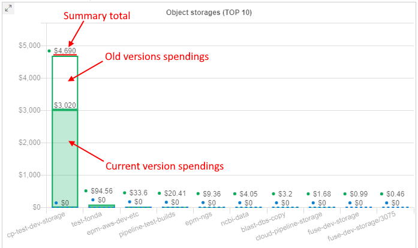
Also now, the detailed spendings table for object storages shows the info for spendings/usage in the format total spendings/usage for all versions / spendings/usage for old versions only:

Breakdown by versions is shown in the CSV report export as well.
Spendings for object storages' archive layers
As object storages supports archiving data into different archive tiers (layers), it is convenient to view spendings separately for each layer.
From the current version, the Object storages report supports the displaying of the corresponding related information.
This information is shown on the separate chart - bar chart with division to different tiers (archive types). This chart does not contain any information for previous period. Only layers used for data storing in the current period according to selected filters are shown. Up to 4 layers can be here: Standard, Glacier, Glacier IR, Deep Archive.
Example:

Object storage layers chart can show the information as storages usage costs - in $ or as average storages volumes - in Gb:

If data in the storage is storing in different tiers (archive types), this can be viewed in a tooltip of other object storages charts - there will be a division of spendings by the used tiers, e.g.:
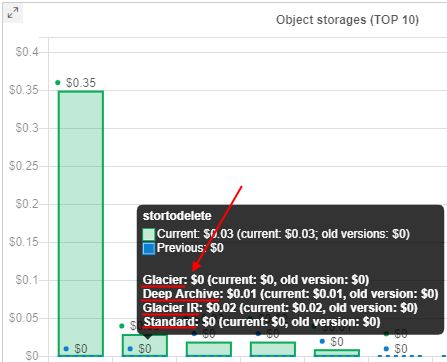
Breakdown by archive layers is shown in the CSV report export as well.
User can select one of the object storage layers - by click it on this new chart.
In this case, all charts and tables will be updated - only storages, that contain files in the selected layer type, will be shown in forms.
Also, shown spendings/data volume will be related only to files in the selected layer, not for the whole storage(s) or other layers.
For example, Glasier IR was selected:
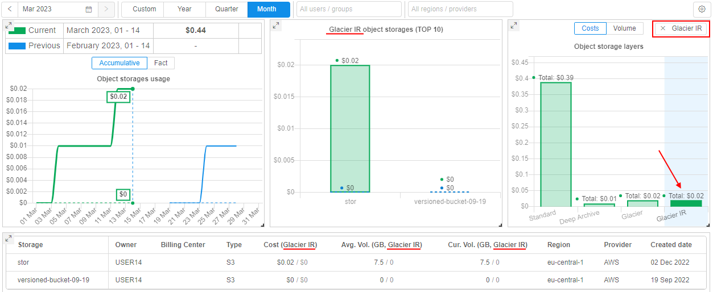
Spendings in runs cost layers
From the current version, the Compute instances report (and sub-reports - for CPU/GPU) supports the displaying of the runs cost division into layers:
Compute- cost of compute instances used in runsDisk- cost of EBS drives connected to runs during their performing
This information is shown on the new Cost details chart - bar chart with division to these layers. This chart does not contain any information for previous period - only cost of runs' layers in the current period according to selected filters are shown.
Additionally, information about cost division are shown in details tables under charts Instance types, Pipelines, Tools - as separate columns, e.g.:
User can select one of the runs cost layers - by click it in the Cost details chart.
In this case:
- summary runs cost chart will be updated - only summary spendings, that correspond to the selected layer (
ComputeorDisk), will be shown - charts Instance types, Pipelines, Tools will be updated - only spendings, that correspond to the selected layer (
ComputeorDisk), will be shown - data in tables under charts will not be changed, but the sorting column will be set the same as the selected layer
For example, if the Compute layer of the runs cost is selected:
Displaying different user's attributes in the Billing reports
Previously, in all the Billing reports, info about users was displayed as user ID only. In some cases, it would be more convenient to display user names or emails - to take a more readable form.
In the current version, this ability is implemented.
A new System Preference is introduced: billing.reports.user.name.attribute
It defines which user's attribute shall be used to display the users in the Billing reports. If it is set, specified attribute will be used in all billing charts, tables, export reports.
Possible values for described preference: userName, FirstName, LastName, etc.
Export reports in CSV from any Billing page
Previously, Cloud Pipeline allowed to export the Billing reports data into the CSV format via the "General" section only. But in separate sections - "Storages" and "Compute Instances" - the user could export data as PNG image format only.
Currently, CSV export has been added to all the reports sections ("Storages"/"Compute instances" and all sub-sections):
- reports display the same structure as in the GUI - the top 10 records of the corresponding entities (e.g. storages or instances)
- for the reports, which contain more than one table - all the tables are exported one after another
- export in
CSVfrom the "General" page remains the same
Example of an export from the "CPU" page:


Breakdown the billing reports by month
Cloud Pipeline allows exporting billing reports in the CSV. Previously, the values were shown as aggregates for the whole selected period. In some cases, it is more convenient to change this view to a breakdown by month.
In the current version, this ability is implemented.
Now, if any period - longer than a month is selected (including a custom period), the CSV-report contains an aggregate for each month of that period.
The whole period summary is being included as well (as previously).
Example of the report for a custom period:

"Billing General" export broken by the user
Previously, Cloud Pipeline could export the "General" billing report split by the "Cost Center". For some use cases, needs to have this report broken by the user as well.
Now, this ability is implemented.
User can specify which dimension to use for the export:
- by Cost Center - in this case, the "General" billing report will be split by the "Cost Center" (as it was previosly)
- by User - in this case, export will be in the same format as for the "Cost Center", but split the values by the user (using
billing.reports.user.name.attributeto display the username)
Format of the report is being selected before the export:
Example of the report broken by the user:
System dictionaries
Often admins have to set attributes (metadata) for "general" users manually. In case, when such metadata keys aren't different for each user and has certain amount of values, it is convenient to select these values from the predefined values list, not to specify them manually each time.
In the current version, the ability to create System Dictionaries was implemented.
Each dictionary is the categorical attribute. I.e. it is attribute which values are predefined.
Each dictionary has its name and values, e.g.:

If the dictionary exists in the system, then admins can use it when specifying attributes for any Platform object (Pipeline, Folder, Storage, Project, Tool), and also for User, Group or Role. In this case, it is enough to specify only the dictionary name as the attribute key, the list of dictionary values will appear automatically in the value field:

Also, the different dictionaries may be connected (linked). I.e. admins can create two dictionaries, which values are mapped 1-1 or 1-many, e.g.:

In the GUI, such connection is being handled in the following way:
- Admin specifies the links between the dictionaries items (e.g. for the example above
ProjectID:BRCA1->DataStorage:<path>). - Links have the "autofill" attribute. If the admin selects the source key (
ProjectID:BRCA1) as attribute key for any object - the destination key will be specified automatically (DataStoragewill be added with the<path>selection):

For more details see here.
Cloud Data application
Previously, there were several ways to manage data between local workstation and Cloud data storages, including CLI, GUI, mounting data storages as a network drives, and others.
In the current version, a new Platform capability was implemented that provides a simple and convenient way to manage files, copy/move them between Cloud data storage and local workstation or even FTP-server.
This introduces via the new separate application that can be downloaded from the Cloud Pipeline Platform and launched at the local machine - Cloud Data application.

Cloud Data application allows you manage files/folders as in a file commander.
Main application form contains two panels (left and right).
In each panel, one of the following sources can be opened: local workstation / FTP server / Cloud data (datastorages).
- the local content shows files and folders of the local workstation (by default, home user's directory). Navigation between and inside folders is available:
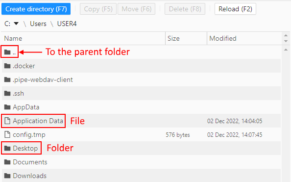 - the Cloud data content includes:
- all FS mounts from the Cloud Pipeline environment - to which current user has permissions.
They are shown as simple folders - those object storages from the Cloud Pipeline environment - to which current user has permissions and "File system access" was requested.
They are shown with storage icon - Navigation between and inside folders/storages is available

- all FS mounts from the Cloud Pipeline environment - to which current user has permissions.
- the ftp content shows files and folders of the FTP/SFTP server. Navigation between and inside folders is available:
The base scenario of the application usage:
- User selects desired source and destination in panels, e.g. FTP server and object datastorage correspondingly:
- Users selects desired files/folders in the source and clicks the data management button in the source panel - according to the action user wants to perform, e.g. to copy a file:

- Action will be performed, content of the panels will be updated:
For more details see here.
Sending of email notifications enhancements
Several additions and updates were implemented in the current version for the System Email notifications.
You can view the general mechanism of the Cloud PIpeline email notifications sending described here.
Additional options for IDLE/HIGH-CONSUMED runs notifications
Previously, to customize a platform behavior with respect to idle or high-consumed runs, admin had to set a number of settings in two different system forms - Preferences and Email Notifications. It was inconvenient and could confused users.
It would be nice to duplicate input fields for some preferences into the Email Notifications section - for faster and more convenient input of their values, and to avoid possible confusion and mistakes.
In the current version, it was implemented. Now:
- For
HIGH_CONSUMED_RESOURCESnotification type settings, the following input fields were added:- "Threshold of disk consume (%)" that duplicates
system.disk.consume.thresholdpreference value - "Threshold of memory consume (%)" that duplicates
system.memory.consume.thresholdpreference value

Saving of the listed values changes at the Email Notifications form will automatically change the corresponding values in the Preferences, and vice versa.
- "Threshold of disk consume (%)" that duplicates
- For
IDLE_RUN,IDLE_RUN_PAUSED,IDLE_RUN_STOPPEDnotification types settings, the following input fields were added:- "Max duration of idle (min)" that duplicates
system.max.idle.timeout.minutespreference value - "Action delay (min)" that duplicates
system.idle.action.timeout.minutespreference value - "CPU idle threshold (%)" that duplicates
system.idle.cpu.thresholdpreference value - "Action" that should duplicates
system.idle.actionpreference value
These 4 fields are united into a single section for all idle notification types - you may configure these fields from any idle notification settings tab.

Saving of the listed values changes at the Email Notifications form will automatically change the corresponding values in the Preferences, and vice versa.
- "Max duration of idle (min)" that duplicates
For all these fields, help tooltips were added to clarify their destination, e.g.:
Notifications for long paused runs
In v0.17, new email notification types were added:
LONG_PAUSED- the notification that is being sent when the run is in the PAUSED state for a long time.
This new notification type has the following additional configurable parameters:- Threshold (sec) - it is a time interval of the run PAUSED state after which the notification will be sent
- Resend delay (sec) - it is a delay after which the notification will be sent again, if the run is still in the PAUSED state
LONG_PAUSED_STOPPED- the notification that is being sent when the run that has been in thePAUSEDstate for a long time, has been stopped by the system.
This new notification type has the following additional configurable parameter:- Threshold (sec) - it is a time interval of the run PAUSED state after which the notification will be sent and the run will be terminated

- Threshold (sec) - it is a time interval of the run PAUSED state after which the notification will be sent and the run will be terminated
There is a common setting for the both described notification types - Action. This setting could be only NOTIFY or STOP. It defines the system behavior with the long paused runs:
- if the Action is
NOTIFY- for the appropriate run, the notificationLONG_PAUSEDwill being sent according to its settings - if the Action is
STOP- for the appropriate run, the notificationLONG_PAUSED_STOPPEDwill be sent once and the run will be terminated
Action type also can be configured via the Systemp preference system.long.paused.action. Saving of the Action setting value changes at the Email Notifications form will automatically change the corresponding value in the Preferences, and vice versa.
"Resend" setting for IDLE runs
Previously, IDLE_RUN notifications were sent only once and then configured action had being performed.
In the current version, the ability to resend this notifications was implemented.
It could be configured via the corresponding field at the IDLE_RUN notification type form:

If the Resend delay is specified and the Action for the idle runs is set as NOTIFY, then the IDLE_RUN notification will being resent every appropriate time interval.
Allow to exclude certain node type from the specific notifications
For quite small/cheap nodes, the users may not want to receive the following email notifications for the run:
IDLE_RUNLONG_PAUSEDLONG_RUNNING
So, a new System preference system.notifications.exclude.instance.types was implemented to control that behavior.
If the node type is specified in this preference, listed above notifications will not be submitted to the jobs, that use this node type.
This preference allows a comma-separated list of the node types and wildcards, e.g.:

Push notifications
Previously, Cloud Pipeline platform sent notifications to users via email only. For many cases it would be useful to show such notifications in the GUI as well. In the current version, such ability was implemented.
Now, all email notifications, that are sending by the platform, are also duplicated as push notifications. This allows to view notifications right in the Cloud Pipeline GUI.
Push notifications do not require additional configuring - they are fully the same as corresponding email notifications, i.e. have the same header, content, recepients list, frequency and trigger of sending, etc.
Once any system event is occurred and its trigger for sending email notification has fired, email will be sent to the configured recipients. Simultaneously, the push notification (with the same subject and body as in the email) will be "sent" to the same recipients, e.g.:

Click it to view the whole notification - it will be opened in a pop-up:

Additionally, a new section appeared in the main menu - Notifications.
It allows to view all push notifications/emails sent to the current user, e.g.:
User can switch notifications lists - to display only new "unread" notifications or only "read" ones.
To view the notification full details, user can click it - notification will be opened in a pop-up:
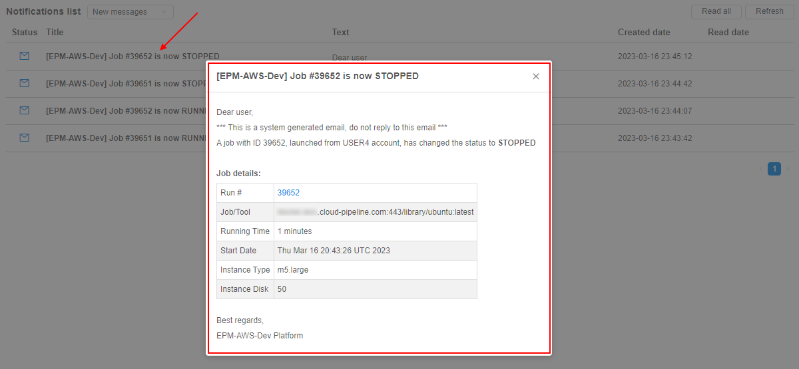
For more details see here.
Allowed price types for a cluster master node
Previously, Cloud Pipeline allowed the user to choose whether the cluster master node be a spot or on-demand instance.
While spots are acceptable for the worker nodes, as they can be recreated in failure cases - master node failure will terminate the whole cluster.
To make things easy for the end-users, an optional restriction on the specific price types usage for the master nodes was implemented.
There is a new string system preference - cluster.allowed.price.types.master - that force the clusters' master node price type.
Default value: "spot,on_demand" - so, both types are accessible for the user when he/she wants to launch a cluster.
Possible values: "spot", "on_demand" or both together comma-separated.
Specified value for that preference defines which price type(s) will be shown in the drop-down, when the cluster run is being configured. For example:
- set in the Preferences:

- once the user selects any cluster configuration in the "Exec environment" section - available price types becomes equal to the set value:

Note: cluster.allowed.price.types.master preference doesn't apply on the price types for single-node jobs
"Max" data series at the "Resource Monitoring" dashboard
Previously, Cloud Pipeline displayed the resources utilization as an average value. This could hide some spikes (which resulted in job failure), when reviewing at a high zoom-level (e.g. several days).
In the current version, to the "CPU Usage" and the "Memory Usage" charts additional data-series ("lines") were added, which are calculated as a max function in each moment.
Existing lines are kept as well, but were renamed to average.
For example:

For more details see here.
User management enhancements
Allowed instance count
Sometimes users' scripts may spawn hundreds of machines without a real need.
This could lead to different bugs on the Platform.
To prevent such situation, a new setting - Allowed instance max count - was added to the user's options. It allows to restrict the number of instances a user can run at the same time:
Behavior is configured by the following way: for example, if this setting for the user is specified to 5 - they can launch only 5 jobs at a maximum. This includes worker nodes of the clusters.
If the user tries to launch a job, but it exceeds a current limit (e.g. limit is 5 and user starts a new instance which is going to be a 6th job), GUI will warn the user before submitting a job:
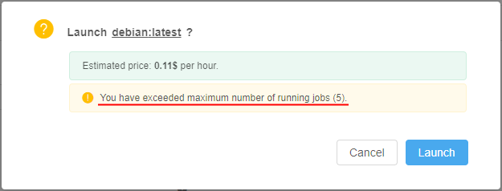
And if the user confirms a run operation - it will be rejected:
Even if the user will try to start a new job via pipe CLI - it will be rejected as well, e.g.:
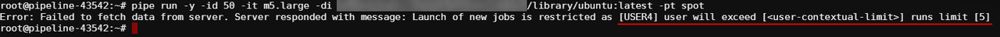
Such restrictions could be set not only for a user, but on another levels too (in descending order of priority):
- User-level - i.e. specified for a user. This overrides any other limit for a particular user. See details here.
- User group level - i.e. specified for a group/role. Count of jobs of each member of the group/role is summed and compared to this parameter. If a number of jobs exceeds a limit - the job submission is rejected. This level is configured via the Allowed instance max count setting for a group/role. See details here.
- globally via the system preferenceÂ
launch.max.runs.user.global- it can be used to set a global default restriction for all the users. I.e. if it set to 5, each Platform user can launch 5 jobs at a maximum.
Additionally, a new command was added to pipe CLI that allows to show the count of instances running by the user at the moment, and also all possible restrictions to the allowed count of instances to launch - pipe users instances:
See details here.
Export custom user's attributes
Previously, user's metadata attributes couldn't be exported in an automatic way.
In the current version, such feature is implemented.
Now, before the users export, there is the ability to select which user's metadata attributes shall be exported. Previous export settings remain the same.
- Click the "Export users" button at the USER MANAGEMENT tab of the System Settings. Select the "Custom configuration":

- In the export pop-up, select additional metadata keys you wish to export with general user's info:

- Exported metadata will be included into the export file as separate columns, e.g. (part of the output):

For more details about users export see here.
User management and export in read-only mode
Previously, only admins had access to the users info/metadata.
In the current version, a new "built-in" role ROLE_USER_READER was added.
This role allows:
- read-only access to the
APIendpoints, responsible for the users, groups, roles information - in the
GUI, users with this role can:- get "general" user/groups information in read-only mode - name/email/etc. - without users' metadata
- get access to the user management tab in read-only mode - without users' metadata and launch options
- export users list - including users' metadata
For more details about user roles see here.
Batch users import
Previously, Cloud Pipeline allowed creating users only one-by-one via the GUI. If a number of users shall be created - it could be quite complicated to perform those operation multiple times.
To address this, a new feature was implemented in the current version - now, admins can import users from a CSV file using GUI and CLI.
CSV format of the file for the batch import:
UserName,Groups,<AttributeItem1>,<AttributeItem2>,<AttributeItemN>
<user1>,<group1>,<Value1>,<Value2>,<ValueN>
<user2>,<group2>|<group3>,<Value3>,<Value4>,<ValueN>
<user3>,,<Value3>,<Value4>,<ValueN>
<user4>,<group4>,,,
Where:
- UserName - contains the user name
- Groups - contains the "permission" groups, which shall be assigned to the user
<AttributeItem1>,<AttributeItem2>...<AttributeItemN>- set of optional columns, which correspond to the user attributes (they could be existing or new)
The import process takes a number of inputs:
CSVfile- Users/Groups/Attributes creation options, which control if a corresponding object shall be created if not found in the database. If a creation option is not specified - the object creation won't happen:
- "
create-user" - "
create-group" - "
create-<ATTRIBUTE_ITEM_NAME>"
- "
Import users via GUI
Import users from a CSV file via GUI can be performed at the USER MANAGEMENT section of the System Settings.
- Click the "Import users" button:

- Select a
CSVfile for the import. The GUI will show the creation options selection, e.g.:
- After the options are selected, click the IMPORT button, e.g.:

- Once the import is done - you can review the import results:
- Users and groups have been created
- Users were assigned to the specified groups
- Attributes were assigned to the users as well
For more details and examples see here.
Import users via CLI
Also in the current version, a new pipe command was implemented to import users from a CSV file via CLI:
pipe users import [OPTIONS] FILE_PATH
Where FILE_PATH - defines a path to the CSV file with users list
Possible options:
-cu/--create-user- allows the creation of new users-cg/--create-group- allows the creation of new groups-cm/--create-metadata<KEY>- allows the creation of a new metadata with specified key
Results of the command execution are similar to the users import operation via GUI.
For more details and examples see here.
User states
Previously, admins could monitor Platform usage, for example, by list of ACTIVE RUNS or via CLUSTER STATE pages.
But for some cases, it can be useful to know which users do utilize the Platform in the current moment.
In the current version, the displaying of user states in the "User management" system tab was implemented - now, that state is shown as an circle icon near the user name:
Possible states:
- Online (green circle) - for users who are logged in and use the Platform in the moment
- Offline (blank white circle) - for users who are not logged in at the moment/do not use the Platform for some time
By hover over the Offline icons - admin can know when the specific user has utilized the Platform the last time, e.g.:

Usage report
It is convenient to have the ability to view Platform statistics of users activity.
E.g. when creating different schedulers or node pools and info about number of online users can be helpful.
For that, the Usage report subtab, showing the Platform's statistics of users activity, was added to the "User Management" system tab.
At this subtab, the summary info about total count of Platform users that were online at different time moments during the certain period is displayed in a chart form:
User can configure the showing chart by the following ways:
- select the type of period of view - day (by default) or month
- select to display data for a specific day/month from the calendar
- restrict the displayed data for specific user(s) or user group(s)/role(s) only
For more details see here.
GUI impersonation
While performing administrating, it is common to help users resolve issues, which can't be reproduced from the administrative accounts.
This requires to perform operations on the users' behalf.
To assist with such tasks, Cloud Pipeline offers "Impersonation" feature. It allows admins to login as a selected user into the Cloud Pipeline GUI and have the same permissions/level of access as the user.
To start the impersonation, admin shall:
- Open the Users subtab of the "User Management" section of the system-level settings
- Load the user profile on whom behalf you are going to impersonate and click the Impersonate button in the top-right corner, e.g.:

- Platform GUI will be reloaded using the selected user:
While in the "Impersonation" mode, the following changes happen to the GUI:
- Main menu turns orange, indicating that the impersonation mode is ON
- Logout button is being changed to the Stop impersonation button
To stop the "Impersonation" mode, user shall click the Stop impersonation button.
For more details see here.
"All pipelines" and "All storages" repositories
There are several ways for users to find the appropriate storage/pipeline object in the Cloud Pipeline Platform - manually via the Library, using the Search ability or via the corresponding panels of the main Dashboard.
It would be convenient to get all lists of the storages/pipelines accessible to the user in one place with short info about each object and easy access to it.
In the current version, such ability was implemented:
- there are two new controls displaying at the Library page, above the library-tree - separate "repositories" for storages and pipelines:

- each "repository" displays the full list of the corresponding objects accessible by the current user, e.g. for pipelines:
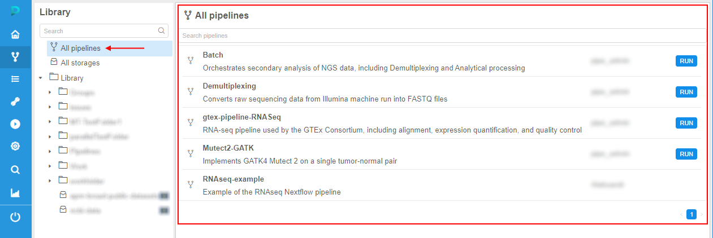 - for each object in the "repository" are displayed:
- object name
- object description (if it is available)
OWNERuser name- additionally for pipelines, the Run button - if the pipeline is available for execute for the user
- additionally for storages, Cloud Region/Provider icons for multi-provider deployments
- if the user clicks any object in the list - its regular page is being opened
- for each "repository", there is a search field for the quick search over objects list
Sensitive storages
Previously, Cloud Pipeline platform allows performing upload/download operations for any authorized data storage.
But certain storages may contain sensitive data, which shall not be copied anywhere outside that storage.
For storing such data, special "sensitive" storages are implemented.
Sensitive data from that storages can be used for calculations or different other jobs, but this data cannot be copy/download to another regular storage/local machine/via the Internet etc.
Viewing of the sensitive data is also partially restricted.
Sensitive storage is being created similar to general object storage, user only should tick the corresponding checkbox:

Via the GUI, the sensitive storage looks similar to the regular object storage, but there are some differences (even for admin/storage OWNER):


I.e. files/folders in the sensitive storage can be created/renamed/removed but can't be downloaded/viewed or edited by any user.
Sensitive storages can be mounted to the run. In this case, the run will become sensitive too.
In sensitive runs, all storages selected for the mounting including sensitive are being mounted in readonly mode to exclude any copy/move operations between storages.
Files from the sensitive storages can be viewed inside the sensitive run and also copied into the inner instance disk, but not to any other storage:
Files from the sensitive storages can't be viewed outside the sensitive run or copied/moved anywhere (for example, when using not the web-terminal version of pipe SSH):

For more details and restrictions that are imposed by using of sensitive storages see here.
Versioned storages
In some cases, users want to have a full-fledged system of the revision control of their stored data - to view revisions, history of changes, diffs between revisions.
So far, for separate storages types (e.g. AWS s3 buckets), there is the ability to enable the versioning option. But it is not enough. Such versioning allows to manage the versions of the certain file, not the revisions of the full storage, which revision can contain changes of several files or folders.
For the needs of full version control of the storing data, there was implemented a special storage type - Versioned storage.
These storages are GitLab repositories under the hood, all changes performed in their data are versioned. Users can view the history of changes, diffs, etc.
Versioned storages are created via the special menu:

The view of the versioned storage is similar to regular data storage with some differences:

For each file/folder in the storage, additional info is displayed:
- Revision - latest revision (SHA-1 hash of the latest commit) touched that file/folder
- Date changed - date and time of the latest commit touched that file/folder
- Author - user name who performed the latest commit touched that file/folder
- Message - message of the latest commit touched that file/folder
Moreover, there are extra controls for this storage type:
- RUN button - allows to run the tool with cloning of the opened versioned storage into the instance
- Generate report button - allows to configure and then download the report of the storage usage (commit history, diffs, etc.) as the Microsoft Word document (
docxformat) - Show history button - allows to open the panel with commit history info of the current versioned storage or selected folder
Each change in a such storage - is a commit by the fact, therefore each change has its related comment message - explicit or automatic created:
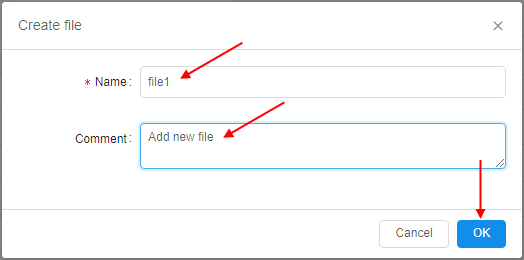

One of the important advantages of versioned storages in condition with regular object storages - ability to view commit history and all changes that were performed with the data in details.
Users can view the commit history of the file in the versioned storage - i.e. history of all commits that touched this file, e.g.:


Using the commit history of the file, users can:
- revert the content of the file to the selected commit
- view/download revert version of the file corresponding to the specific commit
- view diffs between the content of the specific file in the selected commit and in the previous commit, e.g.:

Besides that, users can view the commit history of the folder or the whole versioned storage - i.e. history of all changes touched files inside that folder or its subfolders, e.g.:

Using the commit history of the folder, users can view diffs between the content of the specific folder in the selected commit and in the previous commit.
Versioned storages can be also mounted during the runs, data can be used for the computations and results can be comitted back to such storages - with all the benefits of a version control system.
For that, new management controls were added to the menu of the active runs:


Via this controls, users can:
- clone the versioned storage(s) to the existing running instance
- check differences between cloned and current changed versions of the versioned storage
- save (commit) changes performed in the cloned version of the storage during the run
- checkout revision of the cloned storage in the run
- resolve conflicts appeared during the save or checkout operation
The main scenario of using versioned storage during the run looks like:
- user clones selected versioned storage to the run:


- cloned versioned storages are available inside the run by the path
/versioned-data/<storage_name>/:
- user works with the data, performed changes can be viewed at any moment, e.g.:


- user saves performed changes (i.e. creates a new commit):

- saved changes become available in the origin versioned storage:
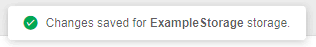

For more details about versioned storages and operations with them see here.
Updates of "Limit mounts" for object storages
Displaying of the CP_CAP_LIMIT_MOUNTS in a user-friendly manner
Previously, Cloud Pipeline displayed the run-enabled data storages (selected via "Limit mounts" feature before the launch) as a list of IDs at the Run logs page (as the CP_CAP_LIMIT_MOUNTS parameter).
In the current version, this viewing was changed to more "friendly" for users:
- The data storage names are being displayed instead of the IDs
- Showing names are hyperlinks, pointing to the data storage in the Cloud Pipeline GUI
- "Sensitive" storages are being highlighted appropriately

See details here.
Allow to create run without mounts
Previously, users could select all/several storages (from the available scope) to be mounted during the run.
But in some cases, it might be needed to launch runs without mounts at all.
In the current version, such ability was implemented.
For that, the separate checkbox was added to the "Limit mounts" settings section:

If this checkbox is set - there are no storages will be mounted during the run initialization:

- 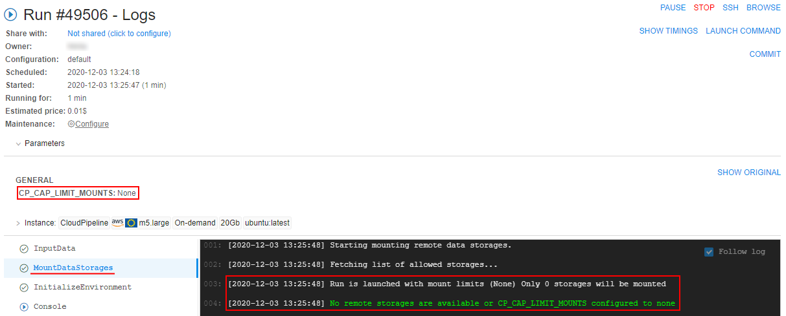
The ability to set "Do not mount storages" is added to all forms where limit mounts can be configured.
Warning in case of a risk of OOM due to the number of the object storage mounts
If the user has 100+ object storages available - they all are mounted to the jobs, by default. When using rather small nodes - this leads to the OOM errors, as the 100+ mount processes may oversubscribe the memory.
Even if the memory consumption will be greatly optmized - the user may still face such issues, if the number of object storages grow.
So in the current version, a sort of hard-limit was implemented to warn the user if there is risk of OOM.
A new System preference is introduced - storage.mounts.per.gb.ratio (int).
This preference allows to specify the "safe" number of storages per Gb of RAM (by default, it is 5 - i.e. "5 storages per each Gb of RAM").
When launching a job - the user's available object storages count is being calculated and checked that this count does not exceed the selected instance type RAM multiplied by the storage.mounts.per.gb.ratio.
If it's exceeded - the user is being warned with the following wording and asked to reduce a number of mounts via the Limit mounts feature, e.g.:
Note:
- Warning does not prohibit the run launching, user can start it at his own discretion changing nothing.
- If the
storage.mounts.per.gb.ratiois not set - no checks are being performed, no warning appears. - Before the launch, only the object storages count is being calculated, file mounts do not introduce this limitation.
Hot node pools
For some jobs, a waiting for a node launch can be too long. It is convenient to have some scope of the running nodes in the background that will be always or on schedule be available.
In the current version, the mechanism of "Hot node pools" was implemented. It allows controlling the number of persistent compute nodes (of the certain configuration) in the cluster during the certain schedule.
This is useful to speed up the compute instances creation process (as the nodes are already up and running).

Admins can create node pools:
- each pool contains one or several identical nodes - admin specifies the node configuration (instance type, disk, Cloud Region, etc.) and a corresponding number of such nodes. This count can be fixed or flexible ("autoscaled")
- each pool has the schedule of these nodes creation/termination. E.g. the majority of the new compute jobs are started during the workday, so no need to keep these persistent instances over the weekends. For the pool, several schedules can be specified
- for each pool can be configured additional filters - to restrict its usage by the specific users/groups or for the specific pipelines/tools etc.
When the pool is created, corresponding nodes are being up (according to pool's schedule(s)) and waiting in the background:

If the user starts a job in this time (pool's schedule(s)) and the instance requested for a job matches to the pool's node - such running node from the pool is automatically being assigned to the job, e.g.:

Note: pools management is available only for admins. Usage of pool nodes is available for any user.
For more details and examples see here.
FS quotas
In some cases, users may store lots of extra files that are not needed more for them in FS storages.
Such amount of extra files may lead to unnecessary storage costs.
To prevent extra spending in this case, in the current version a new ability was implemented - FS quotas.
There is a feature that allows admins to configure quota(s) to the FS storage volume that user can occupy. On exceeding such quota(s), different actions can be applied - e.g., just user notifying or fully read-only mode for the storage.
This allows to minimize the shared filesystem costs by limiting the amount of data being stored in them and to notify the users/admins when FS storage is running out of the specific volume.
To configure notifications/quota settings for the storage, admin shall:
- click the Configure notifications hyperlink in the Attributes panel of the storage:

- in the appeared pop-up, specify the username(s) or a groupname(s) in the Recipients input to choose who will get the FS quota notifications via emails and push notifications, e.g.:

- then click the Add notification to configure rules/thresholds:

- Put a threshold in
Gbor%of the total volume and choose which action shall be performed when that threshold is reached. The following actions can be taken by the platform:

- Send email - just notify the recipients that a quota has been reached (notification will be resent each hour)
- Disable mount - used to let the users cleanup the data:
- GUI will still allow to perform the modification of this storage (
read-writemode ) - In existing nodes (launched runs), FS storage mount will be switched to a
read-onlymode (if it was mounted previously) - This FS storage will be mounted in a
read-onlymode to the new launched compute nodes
- GUI will still allow to perform the modification of this storage (
- Make read-only - used to stop any data activities from the users, only admins can cleanup the data per a request:
- GUI will show this FS storage in a
read-onlymode - Existing nodes (launched runs) will turn this mounted FS storage in a
read-onlymode as well - This FS storage will be mounted in a
read-onlymode to the new launched compute nodes
- GUI will show this FS storage in a
- The notification/quota rules can be combined in any form. E.g., the following example sets three levels of the thresholds. Each level notifies the users about the threshold exceeding and also introduces a new restriction:
For example, if admin will configure notifications/quotas for the storage as described above:
- when user(s) will create/upload some files in the storage and summary FS size will exceed 5 Gb threshold - only notifications will be sent to recipients
- when user(s) will create/upload some more files in the storage and summary FS size will exceed 10 Gb threshold:
- for active jobs (that were already launched), filesystem mount becomes
read-onlyand users will not be able to perform any modification - for new jobs, filesystem will be mounted as
read-only

- in GUI:
- permissions will not be changed. Write operations can be performed, according to the permissions
- "Warning" icon will be displayed in the storage page. It will show
MOUNT DISABLEDstate:

- Storage size will be more than 10 Gb:
- for active jobs (that were already launched), filesystem mount becomes
- when user(s) will create/upload some more files in the storage (e.g. via GUI) and summary FS size will exceed 20 Gb threshold:
- for active jobs (that were already launched), filesystem mount will remain
read-onlyand users will not be able to perform any modification - for new jobs, filesystem will be mounted as
read-only - in GUI:
- storage will become
read-only. User will not be able to perform any modification to the filesystem - "Warning" icon will be still displayed. It will show
READ ONLYstate

- Storage size will be more than 20 Gb:
- storage will become
- for active jobs (that were already launched), filesystem mount will remain
Please note, these restrictions will be applied to "general" users only.
Admins will not be affected by the restrictions. Even if the storage is in read-only state - they can perform READ and WRITE operations.
For more details about FS quotas, their settings and options see here.
Export cluster utilization in Excel format
Previously, users could export Cluster Node Monitor reports only in CSV format.
From now, the ability to export these reports in XLSX format is implemented.
Users can choose the format of the report before the download:

Excel-reports contain not only raw monitoring data but the graphical info (diagrams) too as users can see on the GUI.
Example of the Excel-report sheets:


For more details how to configure Cluster Node Monitor reports see here.
Export cluster utilization via pipe
Also in the current version, the ability to export Cluster Node Monitor reports by pipe CLI is introduced.
The command to download the node usage metrics:
pipe cluster monitor [OPTIONS]
The one of the below options should be specified:
-i/--instance-id{ID} - allows to specify the cloud instance ID. This option cannot be used in conjunction with the--run-idoption-r/--run-id{RUN_ID} - allows to specify the pipeline run ID. This option cannot be used in conjunction with the--instance-idoption
Using non-required options, user can specify desired format of the exported file, statistics intervals, report period, etc.
For details and examples see here.
Pause/resume runs via pipe
Previously, users could automate the pause and resume operation for the pipeline execution only via the API calls.
In the current version, pipe pause and pipe resume operations are exposed to the CLI.
The command to pause a specific running pipeline:
pipe pause [OPTIONS] RUN_ID
Possible options:
--check-size- to check firstly if free disk space is enough for the commit operation-s/--sync- to perform operation in a sync mode. This option blocks the terminal until the PAUSED status won't be returned for the pausing pipeline
The command to resume a specific paused pipeline:
pipe resume [OPTIONS] RUN_ID
Possible option:
-s/--sync- to perform operation in a sync mode. This option blocks the terminal until the RUNNING status won't be returned for the resuming pipeline
For details and examples see here - pause command and resume command.
Home storage for each user
Typically each general user stores personal assets in the data storage, that is created for him/her by the Administrator.
This is treated as a "home" storage and is used a lot. But the creation of multiple users becomes a tedious task (create the user/create storage/grant permissions for the user).
To facilitate this task, in the current version the ability (optionally) to create home storages for the newly created users in automatic mode was implemented.
This behavior is controlled by the system preference storage.user.home.auto (Boolean, default value is false).
It controls whether the home storages shall be created automatically.
If it is set to true - new storage will be created for the user automatically simultaneously with the user creation. Also the just-created user is being granted OWNER permissions for the new storage.
The "home" storage automatic creation is being driven by a template. The template is being described as JSON element in the other new system preference - storage.user.home.template.
In this preference for the template, being described:
- settings for the storage
- permissions on the storage
Example of the configured preferences:
So, after the user creation, the new storage according to the settings in template is being created:
The newly created storage is being set as a "default" storage in the user's profile:
For more details and examples see here.
SSH tunnel to the running compute instance
In the current version, a new ability to access Cloud Pipeline run instances from local workstations is implemented.
Now, Cloud Pipeline run instance can be accessed via SSH directly using special network tunnels. Such tunnels can be established between a local Windows or Linux workstation and a Cloud Pipeline run.
pipe CLI provides a set of command to manage such network tunnels. pipe CLI automatically manages SSH keys and configures passwordless SSH access. As a result no manual SSH keys management is required to access Cloud Pipeline run from the local workstation.
SSH tunnels to Cloud Pipeline runs can be used for interactive SSH sessions, files transferring and third-party applications which depends on SSH protocol.
The command that runs ports tunnelling operations:
pipe tunnel COMMAND [ARGS]
Where COMMAND - one of the following commands:
start <RUN_ID>- establishes tunnel connection to specified run instance port and serves it as a local portstop <RUN_ID- stops background tunnel processes with specified run
For the start command there are two mandatory options:
-lp/--local-port- specifies local port to establish connection from-rp/--remote-port- specifies remote port to establish connection to
Example of the command that establishes tunnel connection to the run:
pipe tunnel start 12345 -lp 4567 -rp 22 --ssh
Here: 12345 is the Run ID, 4567 is just a random free local port and 22 is the Cloud Pipeline run SSH port. Additional --ssh flag enables passwordless SSH access.
For more details and examples see here.
Updates of Metadata object
In the current version, several enhancements were implemented for the Metadata objects displaying and working with:
Controls placement reorganization
- Several controls (for adding a new instance, upload and delete metadata, transfer to the cloud and showing attributes) were moved to Additional parameters control (gear icon):
See details here. - Bulk operation panel is hidden/disabled until at least one instance is selected in a table, e.g.:
To manage selected items, click the V button next to the "Show only selected items" control to open the corresponding menu:
See details here.
Ability to show only selected instances
The ability is implemented to show separately only selected metadata instances. All unselected items will be hidden. For that: select items of interest (they can be at different pages too) and click the "Show only selected items" button at the Bulk operation panel, e.g.:
For shown selected items, all functionality as for the general table is available except filtering.
Improvements in the search over the metadata
- users can search over any attribute values (not only over
IDas previously) - the metadata search field supports multiple terms search - in this case, multiple terms for the search should be specified space separated, e.g.
sample1 sample2 - the metadata search field supports a
key:valuesearch, wherekeyis an attribute name (column header) andvalueis a term that shall be searched in that attribute values, e.g.ID:D703
See details here.
Ability to filter instances
The ability is implemented to filter instances of an entity in a table. Now, user can click a special control in a header of the desired column and set one or several filters for the column values - to restrict the output table, e.g.:
See details here.
Displaying of the creation date info
For all Metadata entities the "Created date" fields are displayed. This column appears and filled in automatically when the Metadata is uploaded or created manually, e.g.:
Sorting by several columns
Ability to sort a list of entities by several columns is implemented. For that, a list is being sorted by one column, then user should click the second column he(she) wants to sort by, then the third, etc.:

See details here.
Autofill
An autofill feature for metadata cells was implemented. It allows to fill metadata instances with data that are based on data in other instances in the same column/row, e.g.:
- click the right-bottom corner of the cell you wish to copy and move the mouse holding the left button - vertically or horizontally, e.g.:

- once you will release the mouse button - selected cells will be autofilled by the value of the cell that you've dragged:

See details here.
Entity ID autogeneration
In some cases, it could be convenient not to specify entity ID during import. Therefore Metadata entities support IDs autogeneration (in the UUID4 format). This works and for the import Metadata operation (for empty ID fields), and for the manual instance creation, e.g.:
See after the creation:
Note: IDs still should be unique
Ability to add SampleSet item via GUI
Now, users may create SampleSets or other "Container-like" entities from the GUI (previously it was possible via the CSV import only).
This feature could be useful, if the Samples were imported using the IDs autogeneration, as it could be complicated to grab those IDs and copy to the CSV.
To create a new SampleSet:
- Click the + Add instance button in the Metadata section and choose the SampleSet instance type:

- Provide the information for the new SampleSet and click the Browse button to select a list of Samples, which will be associated with the creating SampleSet:


- After creation, the new SampleSet will appear in the corresponding metadata class:

See details here.
Preselect instances for a rerun
Additionally, if metadata instances were used for the run via the expansion expressions in the parameters - then for the rerun of such run, the ability to choose was implemented - to use the same resolved expressions values from the initial run or preselect another metadata instance(s) for a coming rerun, e.g.:
- imagine, that some run was launched from the detached configuration. Moreover, one configuration parameter uses the expansion expression:

- for the run, some instance was selected
- after the run is completed, user tries to rerun this run. The Launch form will appear. By default, parameters are substituted fully the same as they were in the initial run:

If click the Launch button in this case - during the rerun, all parameter(s) will use their resolved values from the initial run (previous behavior). - but now, the ability to preselect another metadata instance for the re-launch is implemented. For that, user can click "v" button near the launch button and in the appeared list click "Select metadata entries and launch" item:
In this case, the pop-up will appear to select a metadata instance for which the rerun will be launched. And during the rerun, all parameter(s) that use expansion expression(s) will be resolved according to a new selected metadata instance(s):

See example here.
Custom node images
Previously, Cloud Pipeline allowed to run instances only using some default predefined node images.
For example, some node image was used for all CPU instance types, another - for GPU ones.
Nevertheless there are cases than some of the tools or pipelines require special node images. For example, some tool may require specific nvidia driver version which default GPU node image doesn't have.
In the current version, the ability to use a custom node image was implemented.
If a custom node image is specified for a pipeline, tool or just a single launch then cloud instance with the required node image will be used for their runs.
In a pipeline config, a custom node is specified in format: "instance_image": "<custom_node_image>".
For runs launched via API, a custom node is specified in format: "instanceImage": "<custom_node_image>".
In both cases, <custom_node_image> is the name of the custom image.
For example, to use a custom node for a pipeline:
- open pipeline's CODE tab
- open
config.jsonfile - in the configuration, specify a custom node image:

- save changes
- when launching such pipeline, you can observe that specified image is used for a node:
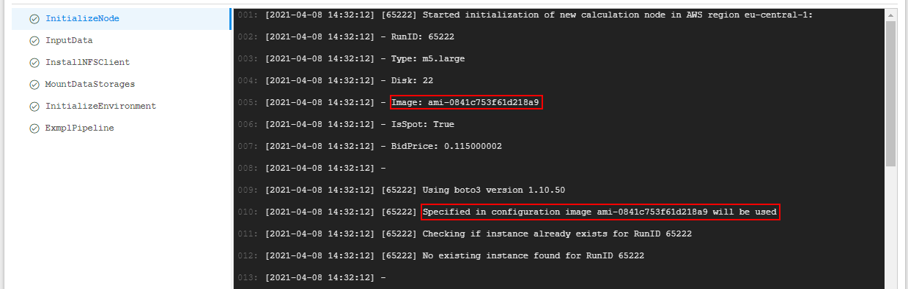
See an example for a pipeline in details here.
Launch a tool with "hosted" applications
"Long-running" Cloud Pipeline applications may occasionally failed.
And one of the main task caused this situation - saving the internal access to the services (e.g. if a database was hosted) as the IP and name (which match the pod) are being changed during the default run restarts.
To resolve that, a special option to assign an internal DNS name to the run was implemented.
Name of the service and a list of ports can be supplied by the user in the GUI, at the Launch form before the run:


Configured DNS service is shown at the Launch form:
And FQDN of all configured services are shown during the run - at the Run logs page:

Checking that the run is launched with a "hosted" application:
For more details see here.
Advanced global search with faceted filters
In v0.14, the Global search over the platform was introduced.
Now, in v0.17, the new version of the search was implemented - Advanced search.
Advanced search repeats the functionality of the Simple search but has some advanced capabilities.
To open the Advanced search click the Search icon in the main menu:
Please note, the previous form of the global search is still available - by pressing "Ctrl+F". Currently, Advanced search is available for admins only
To start searching, a query string shall be entered (search can be triggered by pressing the "Enter" button or by the correspoding Search button near the search bar), e.g.:

As in the previous form, you can:
- restrict search results selecting desired object types from all results scope (the corresponding panel with the object types selector is placed under the search bar):

- open the "Preview" pane for the certain result hovering mouse point over it and click the Info icon:

- scroll search results to view more or use the paging control
New features:
- "Faceted filters" panel at the left side of the search form.
It allows to search objects by their attributes (tags). Operating principle is similar to the E-Commerce sites.
Tags' keys and values displayed in this panel are loaded from separate System Dictionaries marked as filter sources.
User can restrict (filter) search results - by checking/unchecking desired filters.
In the search results, only objects were associated with the checked filter value (dictionary entry) will remain, e.g.:
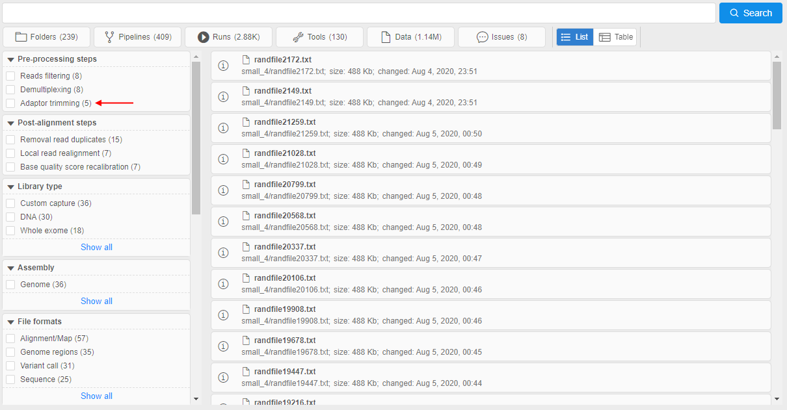
I.e. only objects tagged by this dictionary entry remained in the search results.
You can select several filters values from different facets. Each time, other filters will be updated, and also displayed search results will be changed according to the selected filters.
You can hover over any displayed search result and click the Info icon to check that the object is really tagged by selected filters (attributes), e.g.:


More details - how to add dictionaries to the "Faceted filters" panel, how to configure filters and use them for the search - see here. - Changeable view of the search results output:
Results output in the Simple search has the view as simple list of the object names only.
In the Advanced search, that output contains the additional info - according to the entity type of the certain result - it can beOWNER,DESCRIPTION,DATE_CHANGED,PATH, etc.
Also user can switch between output view formats -listandtable- by special control :
: listview (default) - each result is presented by the "row" in the list, additional info is placed in line, e.g.:

tableview - all results are presented by the single table, additional info is placed in columns, e.g.:

Also thetableview can be customized by the admin user.
To the existing columns, user can add ones for the object attributes (tags) values, where the attributekeybecomes the column header. If the object in results has thevaluefor that attribute - it will be displayed in the corresponding column.
Customizing of additional attribute columns is being performed by the new system preference -search.elastic.index.metadata.fields:

For more details about the view of the results output see here.
For more details about Advanced search see here.
Explicitly "immutable" pipeline parameters
Previously, if the pipeline parameter had a default value - it could not be changed in the detached configuration that used this pipeline.
In different cases, it might be convenient to provide the ability to specify the own parameter value before the configuration launch or vice versa - the ability to launch the configuration with only defaults parameter values.
In the current version, the special option was implemented that allows/denies the parameter value overriding for described cases - no_override (boolean). This option can be specified for the pipeline parameter via config.json file:
- if a pipeline parameter has a default value and
no_overrideistrue- the parameter field will be read-only in the detached configuration that uses this pipeline:

- if a pipeline parameter has a default value and
no_overrideisfalseor not set - the parameter field will be writable in the detached configuration that uses this pipeline:

- if a pipeline parameter has no default value -
no_overrideis ignored and the parameter field will be writable in the detached configuration that uses this pipeline
Disable Hyper-Threading
Hyper-Threading technology makes a single physical processor appear as multiple logical processors. To do this, there is one copy of the architecture state for each logical processor, and the logical processors share a single set of physical execution resources.
Hyper-Threading technology is enabled by default for all nodes in Cloud Pipeline.
But not in all cases this technology is useful. In cases when threads are operating primarily on very close or relatively close instructions or data, the overall throughput occasionally decreases compared to non-interleaved, serial execution of the lines.
For example, at a high performance computing that relies heavily on floating point calculations, the two threads in each core share a single floating point unit (FPU) and are often blocked by one another. In such case Hyper-Threading technology only slows computations.
In the current version, the ability to disable Hyper-Threading for a specific job was implemented.
So, this technology can be turned on or off, as is best for a particular application at the user's discretion.
In Cloud Provider environment, each vCPU is a thread of a physical processor core. All cores of the instance has two threads. Disabling of Hyper-Threading disables the set of vCPUs that are relied to the second thread, set of first thread vCPUs stays enabled (see details for AWS here).
To disable Hyper-Threading technology for a job:
- set the corresponding option in "Run capabilities" before the run:
- check that Hyper-Threading was disabled via the following command after the run is launched:
Here you can check that only 1 thread per core is set, virtual CPUs 4-7 are offline. Only one thread is enabled (set of CPUs 0-3).
For more details see here.
Saving of interim data for jobs stopped by a timeout
Previously, if for a job a timeout was set and it has elapsed - the job was stopped and all the data was erased.
In the current version, the solution to extract the current data from the timed-out jobs was implemented.
Now, if a job has timed out - it will not be stopped immediately.
Instead, the new OutputData task will be triggered.
During this task performing, all the contents of the $ANALYSIS_DIR directory will be copied to all output storages - in the same manner, as if the job has succeeded.
This feature doesn't require additional actions from the user side. Only $ANALYSIS_DIR and output paths should be defined.
Additionally, a new system parameter was added - CP_EXEC_TIMEOUT. This parameter allows to define a timeout period after which the job shall be stopped. The essence of the parameter is the same as the configured value in the "Timeout" field. If both values are specified - for a job, CP_EXEC_TIMEOUT value will be used:

Resolve variables for a rerun
Previously, if the user launched some job containing environment variables in its parameters and then, after the job was completed, user tried to rerun that job - all environment variables from the job parameters had been resolving again during the new run.
But for some cases, it might be needed to use in the rerun all the same values of environment variables that were in the initial run.
In the current version, the ability to choose was implemented - for the rerun, to resolve such variables in a new run or use their initial values.
For that, when user tries to rerun some completed run that used environment variables in its parameters - at the Launch form, the checkbox "Use resolved values" appears in the Parameters section, e.g.:

By default, this checkbox is disabled. In this case, all environment variables are shown as is and will be resolved only during the new (re-launched) run - with the values corresponding to this new run.
If this checkbox is ticked, all environment variables will be resolved with the values of the initial run. Correspondingly, parameters that use environment variables will not be changed during the new launch, e.g.:

See example here.
NAT gateway
Previously, if the Cloud Pipeline Platform was being deployed in some private subnet, it could be quite difficult for the admin to expose a network endpoint for some service to use in a Platform. This required manual execution of a number of tasks on the Platform Core instance and, accordingly, might lead to errors.
To resolve this, in the current version, the convenient way to manage network routes (creating/removing) from the GUI was implemented.
For that, a new NAT gateway subtab was added to the System Management section of the System Settings.
The NAT gateway subtab allows to configure network routes:
To add a route, admin shall:
- click the ADD ROUTE button:

- in the appeared pop-up, specify details of an external resource: server name, IP (if needs), port(s) and comment to route (optionally), e.g.:
- just-added external server will appear in the list. Admin should click the SAVE button to confirm made changes:
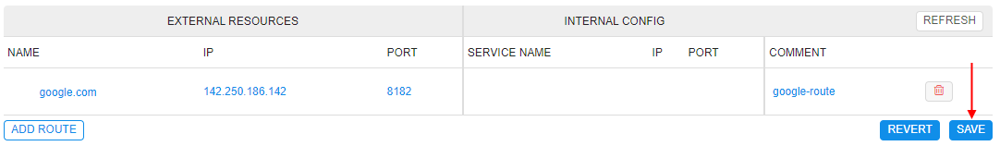 - once the route creation will be done, the route details will appear in the INTERNAL CONFIG fields and near the route, the status will be shown as ACTIVE:
For more details see here.
Custom Run capabilities
Previously, users might select only predefined "system" Run capabilities for a job.
In some cases or deployments, these capabilities may not be enough.
In the current version, the ability for admins to add custom Run capabilities was implemented. Use them for a job/tool run all users can.
Managing of the custom capabilities is being performed via the new system preference launch.capabilities.
This preference contains an array of capability descriptions in JSON-format and has the following structure:
{
"<capability_name_1>": {
"description": "<Description of the capability>",
"commands": [
"<command_1>",
"<command_2>",
...
],
"params": {
"<parameter_1>": "<value_1>",
"<parameter_2>": "<value_2>",
...
}
},
"<capability_name_2": {
...
},
...
}
For example:
Saved capability then can be used for a job/tool:
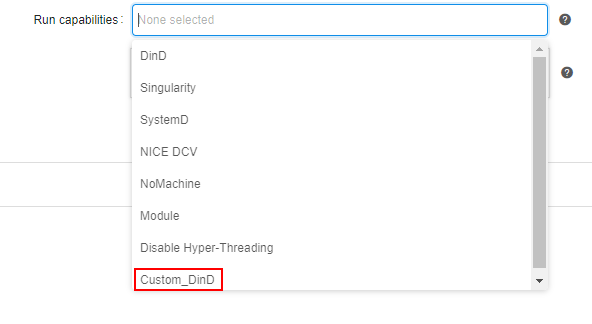

For more details see here.
Storage lifecycle management
Previously, users had the simplified opportunity to configure the lifecycle of data in storages - via specifying STS/LTS durations in the storage settings.
This way is rather primitive and does not allow to fine-tune data archiving/restoring.
In the current version, the ability to configure datastorage lifecycle in details was implemented.
This new option allows to perform the automatical data transition from standard storage to different types of archival storages by occurance of a certain event and restore that data back as well if needed.
Previous functionality (STS/LTS durations) was excluded.
For the new one, an additional tab was included to the storage settings - Transition rules:

New implemented functionality includes abilities:
- automatic data archiving/removing according to specified transition rule(s)
- restoring of previously archived data for the specified period
Data archiving is provided by configurable set of transition rules for each separate storage. Each rule defines which files, when (specific date or by the event) and where (different types of archive) shall be automatically transferred:
- firstly, user creates a rule for a storage - specifying the path and glob pattern for a file(s) name(s) which shall be transferred, e.g.:

User can select to transfer files one-by-one or in bulk-mode by the first/last appeared file in a group.
Also, an additional condition for the files transition can be configured. - then user selects an archive class as the data destination. Here, several destinations can be added (for different dates), e.g.:
Note: archive classes depend on the Cloud Provider - then user defines the event by which the data shall be transferred - after certain period after the file(s) creation or at the specific date:

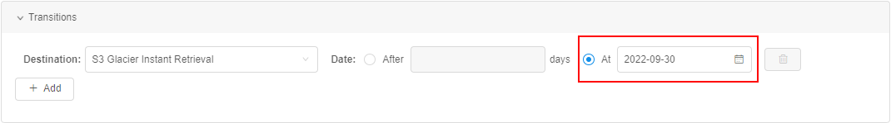 - also, notifications can be configured for the rule events (optionally):
- recipients list
- notification title and text
- ability to specify a delay for data transition - user that receive such notification will have the ability to prolong (delay) transition for some period

- created rule can be found in the Transition rules tab of the storage settings:

- after the rule is created, it starts to work. If file matches the condition of any storage rule - it will be transferred to some archive or removed (if
Deletionis set as data destination). Transferred file becomes disabled for changing/renaming from the GUI/CLI. At the GUI, near such file a label appears that corresponds to the transition destination, e.g.:
For more details see here.
Data restoring can be applied to previously archived files. Separate files or whole folders (with sub-folders) can be restored:
- user selects which files/folders shall be restored, e.g.:
- user defines the period for which files shall be restored and notification recipients list:

- after the confirmation, the restore process begins - it is shown by the special status icon:
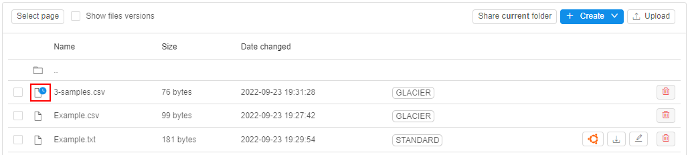 - when file is restored - it is shown by the special status icon as well:
- once the restore period is over, files will be automatically transferred to the archive where they were before
For more details see here.
Image history
Cloud Pipeline performs scanning of the Docker images on a regular basis. This is used to grab the information on:
- Available software packages
- Possible vulnerabilities of those packages
The users may leverage this feature to choose which docker image to use, depending on the needs for a specific application.
But this list of the software packages may not show the full list of the applications as the scanning mechanism uses only the "well-known" filesystem locations to collect the applications/versions informations. Some of the apps, might be installed into any custom location and the scanner won't be able to find it.
To fulfill this gap and to address some advanced cases, in the current version, a new feature was introduced: now it's possible to view the list of the "Docker layers" and corresponding commands, which were used to generate those layers.
It can be viewed via the specific tab in the tool version menu - Image history:

This allows to get information on the exact commands and settings, which were used to create an image and even reproduce it from scratch.
For more details see here.
Environments synchronization via pipectl
In some cases, admins need to synchronize two different environments of the Cloud Pipeline.
New special routine in the pipectl utility is implemented for that - pipectl sync.
It allows to synchronize from the source environment to the destination one the following objects:
- users / user groups / user roles
- docker registry / tool groups / tools
Synchronization can be performed with or without synchronization of attributes (metadata) for the specified Platform objects.
During the synchronization, changes are being performed only in the destination environment, the source environment remains the same.
For details and examples see here.
Data access audit
In the current version, System logs were expanded - now, all actions related to any access to the data stored in the object storages are being logged.
This includes logging of operations READ/WRITE/DELETE, listing operation is not logged.
For logs of data access events, a new item was added to the "Type" filter of the System logs - audit type:
By this type, the following data access operations are being logged:
- access to the Object storages data from the Platform GUI
- access to the Object storages data from the
pipeCLI - access to the mounted Object storages' data - both from GUI and CLI
Examples of logs:
For more details see here.
System Jobs
Sometimes it's desirable for admin to get some statistics or system information about current Cloud Pipeline deployment state - for example, collect information about all storages that have specific size or list all unattached EBS volumes, or set some specific policy to all storages, etc.
For such purposes, specific scripts can be written and launched in some way. Number of these "admin" scripts can grow very quickly and it would be convenient to have some solution to create and run such scripts in a system, and also view results (logs) and store them.
In the current version, a new solution was implemeted for "admin" scripts - System Jobs.
System jobs solution uses the existing Cloud-Pipeline infrastructure, to reduce number of preparation steps to be done to get desire output.
In a nutshell, the System Jobs solution includes the following:
- special prepared system pipeline, that contains system jobs scripts. Admin can add new scripts or edit/delete existing ones. Also, pipeline config contains:
Kubernetesservice account to performkubectlcommands from such pipeline during the system job run- special assign policy that allows to assign the pipeline to one of the running system node (
MASTERnode, for example). It is convenient as no additional instances (waiting or initializing ones) are required to perform a job
- special prepared docker image that includes pre-installed packages such as system packages (
curl,nano,git, etc.),kubectl,pipeCLI, Cloud CLI (AWS/Azure/GCP),LustreFSclient - separate System Jobs form that displays all available system job scripts, allows to run existing scripts and view results of their performing
Userjourney looks like:
- Admin creates a new system job script and places it to the specific path inside the special system pipeline (pipeline and path are defined by System Preferences), e.g.:


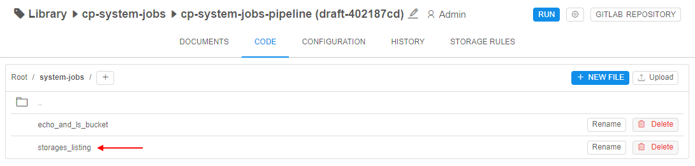 - Admin opens the System Jobs panel from the System Settings:

Here, there is the whole list of stored system scripts and results of their runs. - To run a script - admin selects any script and launch it:

- When admin launches a system job - the system instance (
MASTERinstance, by default) is used for the job performing. At that system instance, the docker-container is launched from the special prepared docker-image for system jobs. In the launched docker-container, the system job script is being performed. - At the System jobs form, states of the performing job are shown similar to the pipeline states, e.g.:

- Once the script is performed, the state will be changed to Success:
- By the button LOG, the script performing output can be viewed:

For more details see here.
Cluster run usage
Previously, user can view the state of the cluster run (master and its nested runs) via the Run logs page of the cluster master node. But this information was actual only at the specific time moment.
It would be convenient to view how the cluster usage has been changing over the whole cluster run duration.
This is especially useful information for auto-scaled clusters, as the number of worker nodes in such clusters can vary greatly over time.
In v0.17, such ability was added. User can view a specific cluster's usage over time - by click the corresponding hyperlink at the Run logs page of the cluster's master node:
The chart pop-up will be opened, e.g.:
The chart shows a cluster usage - number of all active instances (including the master node) of the current cluster over time.
For more details see here.
Cluster run estimation price
Previously, Cloud Pipeline allowed to view a price estimation for the single instance jobs.
But the clusters did not provide such information (summary). Users could see a price only for a master node.
Now, Cloud Pipeline offers a cost estimation, when any compute instances are running:
- Standalone instance - reports it's own cost:
- Dashboard:
- Run's list:
- Dashboard:
- Static cluster - reports the full cluster cost (summary for a master node and all workers), since it is started:
- Dashboard:
- Run's list - master node's cost is reported in the brackets as well:
- Dashboard:
- Autoscaled cluster - reports the costs, based on the workers lifetime (summary for a master node and all workers). As the workers may be created and terminated all the time - there costs are computed only for the RUNNING state:
- Dashboard:
- Run's list - master node's cost is reported in the brackets as well:
- Dashboard:
Terminal view
From the current version, users have the ability to configure the view of the SSH terminal session:
- Dark (default)
- Light
Required color schema can be configured in two ways:
- Persistent - schema is being stored in the user profile and used any time SSH session is opened:
- Temporary - schema is being used during a current SSH session only - toggling Dark <-> Light can be performed via the special control in the terminal frame:
For details see here.
AWS: seamless authentication
In some cases, users are faced with the following scenarios:
- Some jobs are running in the Cloud Pipeline and accessing data/services located in the external accounts (e.g.
Amazon S3,Amazon DynamoDB). This requires the user to specify the authentication keys explicitly (either in the shell session or in theR/Pythonscripts). This is not user-friendly and not secure, if the users include the credentials into the scripts. - There are also users who would like to leverage
R/Pythonlibraries, that have embeddedAmazon S3support. Users have to download data locally first (viapipe) and then perform the processing.
In the current version, a new mechanism of the seamless AWS authentication was implemented.
It allows users to execute any request to the AWS API, from inside the Cloud Pipeline environment, without an authentication request.
The following mechanism automates the Cloud Provider authentication for the userâs scripts:
- Administrator is able to configure the userâs access permissions in the Cloud Pipeline account of the Cloud Provider or provide credentials for the external Cloud Provider account
- All the requests to the Cloud Provider authentication are handled by the certain Cloud Pipeline service, which authenticates the user with the configured credentials
- Users are able to use the Cloud Provider API without the authentication request
Administrator can create specific interfaces - Cloud Credentials Profiles, that contain the following fields:
- Provider - to specify the Cloud Provider
- Name - to specify the profile name
- Assumed Role - to specify the role received from the Cloud Provider that will be used for the authentication to the Cloud Provider API
- Policy - to specify the Cloud Provider policy of the objects access
It could be configured in Cloud Provider settings, e.g.:

Administrator can assign profiles to User/Role/Group entity.
For each entity many profiles can be assigned.
Also, from the profiles assigned to the certain User/Role/Group the one can be selected as default. If the default profile isn't selected - during the authentication operation there shall be selected the profile to use.
It could be configured via the User management panel, e.g.:
Usage of the assigned profiles is being configured via the new Cloud Region option - "Mount Credentials Rule" with the following allowed values:
- NONE - for runs in this region, credentials will not be configured
- SAME CLOUD - for runs in this region, the set user credentials will be configured only allowed for the same Cloud Provider
- ALL - for runs in this region, the all user credentials will be configured
As example, if for the user such AWS credential profile is assigned and the mount rule is allowed - he/she can use AWS CLI directly to the bucket (defined and allowed by profile policy) without extra-authentication:
For details and example see here.
AWS: transfer objects between AWS regions using pipe storage cp/mv commands
Previously, pipe storage cp/pipe storage mv commands allowed to transfer objects only within one AWS region.
In the current version, the ability to transfer objects between storages from different AWS regions is implemented.
The commands themselves remain the same.
Example:

AWS: switching of Cloud Regions for launched jobs in case of insufficient capacity
Previously, if user started an AWS job and there were not enough instances of specified type to launch that job in a region - it would fail.
In the current version, the ability to automatically relaunch such runs in other AWS region(s) was implemented.
For that functionality, a new setting was added to the Cloud Region configuration - "Run shift policy":
If this setting is enabled for some AWS region 1 and for some AWS region 2 - then a job launched in the AWS region 1 will automatically try to be relaunched in the AWS region 2 in case when there are not enough instances of selected type in the AWS region 1 (InsufficientInstanceCapacity error):


Original job is being automatically stopped, new job with the same instance type as in the original run but in the AWS region 2 will be launched.
If a new instance is not available with a new region - relaunch will be performed in one more region as long as there are AWS regions in the Platform with the enabled option "Run shift policy".
Feature is not available:
- for spot runs
- for runs that have any Cloud dependent parameter
- for worker or cluster runs
More details see here.
Notable Bug fixes
Unable to view pipeline sources for previous draft versions
Previously, Pipeline's "Documents" and "Code" tabs always showed content of the last "draft" version of pipeline, even if one of the previous versions was forcibly specified in the url.
pipe storage ls works incorrectly with the option --page
Previously, the pipe CLI storage listing worked incorrectly with --page (-p) option with S3 provider. All items were displayed without pagination.
AWS deployment: unable to list more than 1000 files in the S3 bucket
Previously, when s3 bucket contained more than 1000 files - user could list all the files in the bucket via the GUI, but only first 1000 files via any pipe CLI capabilities (pipe storage ls, pipe storage mount, etc.).
Size of tool version created from original tool without any changes is a lot larger than original one
Previously, the size of the tool version that had created from the original tool without any changes or after resume operation for paused run - by COMMIT operation - was a lot larger than original version.
pipe storage cp fails in Windows for the GCS with sslv3 error
Previously, the sslv3 issue happened when data to/from the GCS was copying using the Windows workstation.
Shared endpoint for anonymous users is being opened from the second time
Previously, when anonymous user tried to open a hyperlink with the shared endpoint - he/she got the Platform's "Access denied" page.
But if user tried to open the page in the second time - it was being opened correctly.
Attempt to view permissions on a pipeline via the pipe view-pipes throws an error
Previously, when trying to view permissions of a pipeline via the pipe view-pipes -r command - the command execution failed.
Scale down "cold" SGE autoscaling cluster
Previously, SGE autoscaling cluster didn't scale down until at least one running job appears in queue. Currently, SGE autoscaling cluster is being scaled down even if there weren't any running jobs yet.
"Launch Command" functionality issues
Previously, if a user specified the values of the parameters with "spaces" (e.g. selection of the input parameter value from the GUI bucket browser) - this broke the command format.
Also, the Launch Command generation function used single-quotes to wrap the -cmd value. This was causing to fail when running the generate commands from the Windows environment. As the Windows CMD shell can't resolve it correctly (the command value is still split by the space).
Inner data storages navigation bar fails to navigate
Previously, navigation bar for so-called "inner" data storages produced You cannot navigate to another storage in case of any interaction with it.
Region is being set incorrectly when trying to rerun pipeline
Previously, when tried to rerun any run - the default region was being set in the Cloud Region field. But the instance type wasn't being changed automatically and remained the same as was set before the run. This could lead to inconsistencies.
PAUSE and COMMIT operations fail for the jobs with an autoscaled disk
Previously, PAUSE and COMMIT operations failed with the NullPointerException error for the jobs with an autoscaled disk.
Broken layouts
- In Groups/Roles membership view, the vertical scrollbar was shown even if there was a plenty of space below the list. Currently, the list size is increased to the pop up size.
- At the Billing reports page, if the whole header menu didn't not fit the screen width - the "discounts" links overflew the regions selector. Currently, row breaks feature is implemeted for this page.